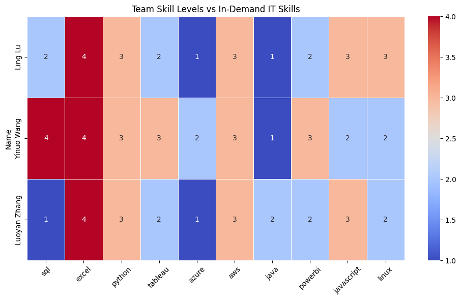

In this section, we will focus on evaluating and enhancing the skillset of our team for IT career growth. We create a team-based skill dataframe where each team member rates their proficiency in relevant IT skills on a scale of 1 to 5. Then, we compare these skills against industry demands by extracting the most sought-after skills from IT job postings. Finally, based on this analysis, we propose an improvement plan for each team member, identifying key areas to focus on and potential resources to bridge skill gaps.
Skill Gap Analysis
This section presents an analysis of the current skill levels of our team members in relation to the most in-demand skills in the IT job market. The goal is to:
Assess each member’s proficiency in key technical skills
Identify the most frequently required skills from job postings
Compare team skills with industry expectations
Recommend strategies for personal and group-level skill improvement
NAICS_2022_6_NAME
custom computer programming services 5078
computer systems design services 4312
other computer related services 1404
colleges, universities, and professional schools 1362
general medical and surgical hospitals 1127
software publishers 1037
computing infrastructure providers, data processing, web hosting, and related services 926
web search portals and all other information services 574
financial transactions processing, reserve, and clearinghouse activities 447
research and development in the physical, engineering, and life sciences (except nanotechnology and biotechnology) 344
Name: count, dtype: int64
import refrom collections import Counterall_it_text =" ".join(df_it["BODY"].dropna().astype(str))words = re.findall(r'\b[a-zA-Z\+\#\.]{2,}\b', all_it_text.lower())target_skills = ['python', 'sql', 'excel', 'r', 'tableau', 'powerbi','hadoop', 'spark', 'aws', 'azure', 'docker','kubernetes', 'linux', 'java', 'javascript', 'c++','git', 'machine learning', 'deep learning']skill_counts = Counter([word for word in words if word in target_skills])top_skills = [skill for skill, _ in skill_counts.most_common(10)]print("Top 10 IT Job Skills:", top_skills)
Top 10 IT Job Skills: ['sql', 'excel', 'python', 'tableau', 'azure', 'aws', 'java', 'powerbi', 'javascript', 'linux']
for skill in top_skills:if skill notin df_skills.columns: df_skills[skill] =0df_compare = df_skills[top_skills]df_compare
sql
excel
python
tableau
azure
aws
java
powerbi
javascript
linux
Name
Ling Lu
2
4
3
2
1
3
1
2
3
3
Yinuo Wang
4
4
3
3
2
3
1
3
2
2
Luoyan Zhang
1
4
3
2
1
3
2
2
3
2
import seaborn as snsimport matplotlib.pyplot as pltplt.figure(figsize=(10, 6))sns.heatmap(df_compare, annot=True, cmap="coolwarm", linewidths=0.5)plt.title("Team Skill Levels vs In-Demand IT Skills")plt.xticks(rotation=45)plt.tight_layout()plt.show()

Propose an Improvement Plan
Which skills should each member prioritize learning?
Excel and Python are the team’s strongest shared skills, with all members scoring consistently above average in these areas.
SQL, Azure, and Java show moderate to low proficiency across the team. In particular, Ling Lu and Luoyan Zhang should prioritize improving SQL, while all members can benefit from advancing their cloud platform skills (Azure, AWS).
Linux is rated low, despite being highly demanded in the market. It is clear opportunity for team-wide upskilling.
Yinuo Wang demonstrates relative strength in SQL, Power BI, and Excel, positioning her well for data analytics tasks.
Luoyan Zhang shows balanced competency across multiple skills but lacks depth in foundational programming tools like Git or JavaScript.
What courses or resources can help?
To effectively bridge the identified skill gaps, the following resources are recommended:
Skill
Suggested Resources
Python, SQL
Codecademy, W3Schools, LeetCode, Kaggle
Tableau, Power BI
Coursera: Data Visualization with Tableau, YouTube (Alex the Analyst), Udemy
AWS, Azure
AWS Cloud Practitioner, Microsoft Learn, freeCodeCamp cloud courses
Docker, Kubernetes
Docker Docs, Kubernetes Bootcamp (KodeKloud), YouTube (TechWorld with Nana)
Git
GitHub Learning Lab, freeCodeCamp Git Tutorial
Linux
Linux Journey, edX Linux Basics, The Linux Foundation Intro Courses